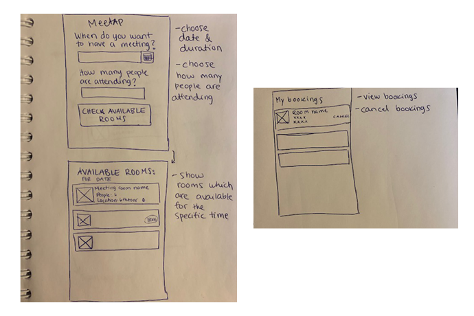
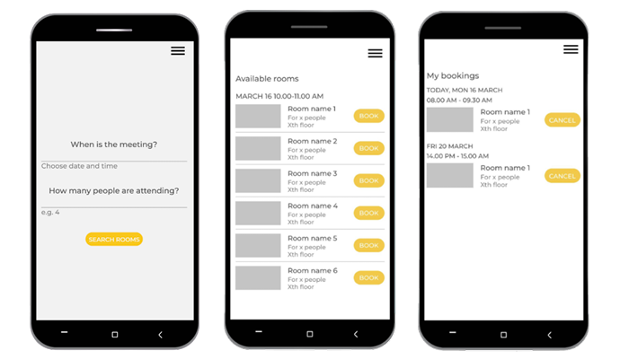
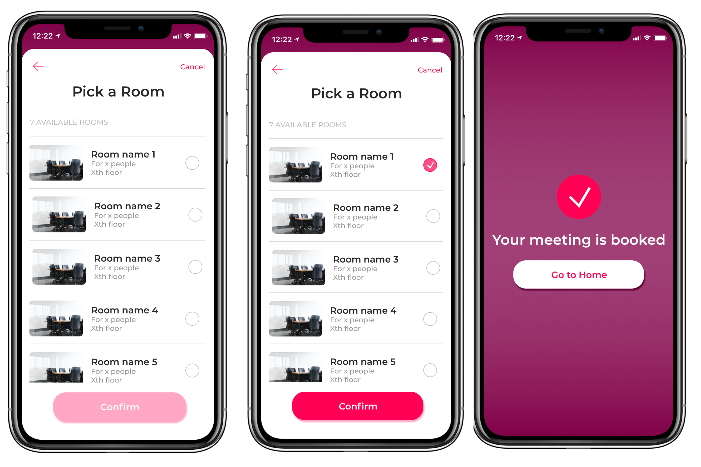

How to find available rooms for meetings?
Own UX/UI project
Goal
I wanted to learn more about UI/UX design and I also wanted to learn how to use Figma. I started to design a meeting room booking app which would make it easier to find available rooms for meetings. The project is under construction and here you can see the latest version of it.
Design process
I started to project with user research. I asked from few friends how they currently book meeting rooms. I also benchmarked some booking sites and used my own experiences as a starting point. I found out that usually the first step is to check when the needed people are available and then search rooms. However, the current solutions didn't suggest available rooms for specific time.
For the first version, I decided to design an app where the amount of people and time are set by the user and then the app searches available rooms. In the next version the plan is to include people in the app so that the user could pick the needed people and then the app would suggest available timeslots and rooms.
After user research I created use cases for booking a meeting in order to understand what features are needed in the app.
Use cases:
- I want to book a meeting room for X people for X day at Xam-Xam.
- I want to view my bookings.
- I want to cancel my booking.
- I want to know where the meeting room is.
After I had wrote down the use cases I started to do wireframes for book a room view, search result list of available rooms view and own bookings view.
Paper wireframes.
UI design drafts: Based on the wireframes I opened Figma and started to design the first versions of the views.
UI design drafts.
For the design I checked Google's Material Design to get inspiration and some guidance for designing different elements. I made the search result as list because it offers a quick way to glance through the results. Booking a room happens by clicking the Book button. From Menu it is possible to navigate between the home view and my bookings view.
High fidelity prototype: After the first version, I started to make high fidelity prototype and concentrate more also for the UI design. For the UI design I looked inspiration from Dribble. For the high fidelity prototype I decided to make the home view as an overview for the user's upcoming meetings where the user can also cancel the meetings. The new booking is also happening through the home view and I removed the menu.

Home view and arrange a new meeting view.
In the Arrange a new meeting view the user type the name of the meeting and chooses the date from the scrollable week view.


Setting the name, time and numbers of attendees for the meeting.
The time and attending people are typed. The input areas are highlighted while active with the pink color and the text color is changed darker after the user has set the values. The search a room button is also invalid until the user has set all the values.
Pick a room view and confirmation of the booking.
Choosing the room happens in pick a room view where the user can scroll through the search result. After choosing the room the confrim button activates. After confirming the meeting is booked and the user can go back to the home view.
Result
Aftermath
I got more confident in UI/UX design. I was learning to use Figma, so while doing the project I got more familiar with the different features such as using components and prototyping different interactions. I also noticed how much I enjoy doing this kind of work and creating something concrete!